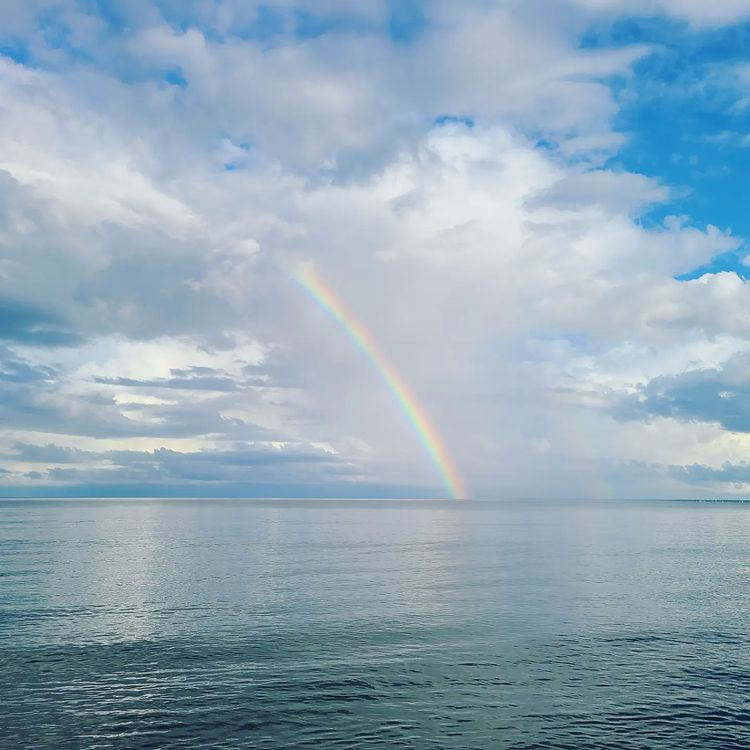
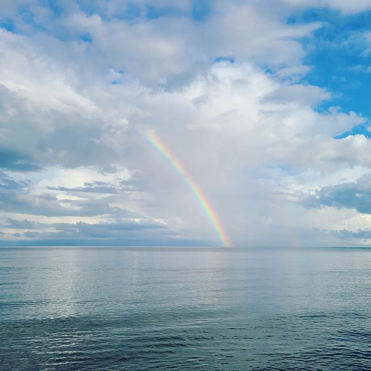

Frequently asked questions about Trujillo
 

In addition to Guaimoreto Lagoon and the Santa Barbara Fortress, what other places can I visit in Trujillo?
Here are some them:
Coral reef in Cayo Blanco: Prepare for the colors of the reef and the variety of species you can see.
Star bank: It is an area of the bay that is home to a large number of starfish where tourists can go and observe. But they can't take the starfish because it's illegal.
Saint John the Baptist Cathedral: It is a cathedral that is more than a century old which is located in the center Trujillo city.
How is the weather like in Trujillo?
Trujillo's climate is tropical most of the year. The temperature remains in a range around 32 Celsius. Except the last three months of the year in which rain is frequent
What type of transportation can I use in Trujillo?
The most common transportation in the city is the car, in the first place, and the motorcycle, in the second place. It is also possible to use taxis as public transport.